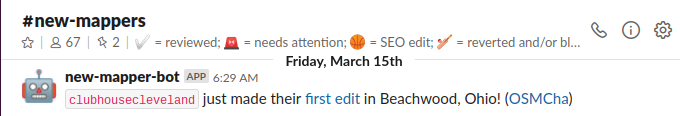

Tracking Down SEO Contributors
Bryce Jasmer (OSM: @b-jazz)
State of the Map US 2019
Minneapolis, MN
2019-09-07
Tracking Down SEO Contributors
- What is SEO
- How I stumbled on the SEO edits
- Why didn't DWG just block them
- How did I find the responsible party
- Communicating actions with the community
- What it's like working with an SEO company
- Resolution
Search Engine Optimization (SEO)
"The process of increasing the quality and quantity of website traffic by increasing the visibility of a website or a web page to users of a web search engine." -- Wikipedia
- SEO isn't necessarily bad
- Creating POIs (correctly) is useful
- Not following best practices is not
- Ignoring feedback is not
Stumbling On SEO Edits
- Discovered #new-mappers channel on US Slack server

- Wanted to follow up and clean edits in my state
- Noticed a pattern of user names similar to business names
- Started correcting errors and leave changeset comments
- Most if not all of these POIs had similar errors
- UpK - Uppercase Key names
- FtK - Missing Feature Key
- Hrs - Non-US Hours (10AM - 6PM in India)
- Wlk - Didn't complete iD Walkthrough
- SOb - Single Object changeset
- OOE - One Object Edited
- AxC - Action was Create
- CNd - Created Node
- UiC - "Updated" in Changeset comment
- Lvn - Large Levenstein ratio (username : business name)
- URL - Website URL included with node
- BHr - Bad opening_hours format
- Bst - Street abbreviations (St., Rd., etc.)
From: Data Working Group <data@otrs.openstreetmap.org>
To: bryce@jasmer.com
Subject: Requesting IP Block of the non-responsive SEO Company eGumball
Dear Bryce Jasmer,
thank you for writing.
These edits indeed look suspicious, and should be removed. However, it appears that if eGumball is behind these edits, they have a clever mechanism, because there are almost 100 different IP addresses behind the top 140 offenders in your list, and vastly different email addresses to.
Sounds like something more sophisticated than a simple IP block is called for.
$ ./peanutbutter
============================================================
SCORE: 12
STRIKES: UiC SOb AxC CNd Lvn URL Wlk Hrs FtK
============================================================
MAPPER INFO:
mapper name: clubhousecleveland
CHANGESET INFO:
link: http://osm.org/changeset/68174548
comment: Updated
OBJECT INFO:
addr:state: OH
addr:street: Commerce Park
name: The Clubhouse Cleveland Indoor Golf
phone: +1 216-450-1700
Delete node 6339790793 from changeset 68174548 [Y,n]:
From: ********@egumball.com
To: bryce@jasmer.com
Subject: eGumball and OpenStreetMap
Bryce,
Thanks for taking the time to reach out to me yesterday! I did some initial checking with our developers to see if they knew of any code that would be updating openstreetmap, but they all said no. I’ve asked them to scan our source code repository to make sure there isn’t something there that someone added previously that they just don’t know about. I’m also checking with the customer service teams we have in other locations to see if someone might be manually updating it.
My records show the business you referenced is a customer, but we haven’t talked to them in a year, and they signed up two years ago. I initially thought it might be some overzealous customer service person, but that kind of shoots that idea down. I’ll keep checking and see if we can find anything. Thanks!
Thank you!
(And yes, the background image is indeed a slice of SPAM®)